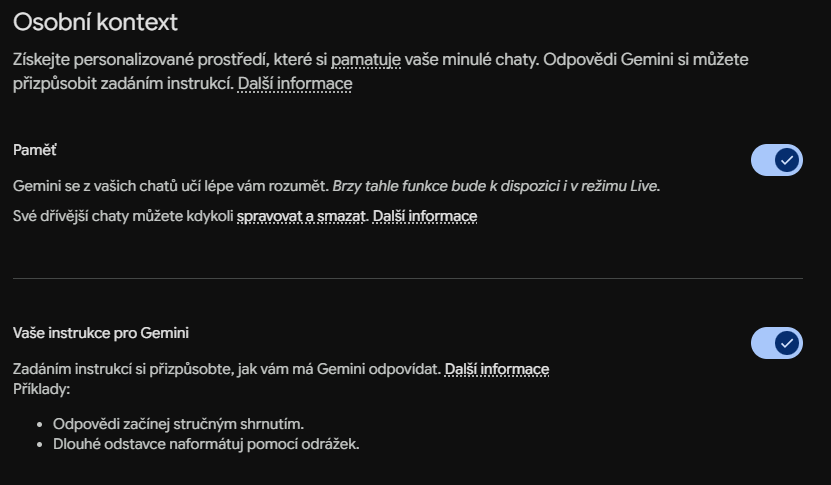
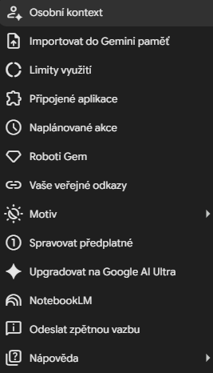

Jak si jednoduše personifikovat Gemini?
Když denně pracuji s velkými jazykovými modely, nejvíce mě unavuje neustále dokola opakovat ty samé instrukce: „piš stručně, ověř fakta, nepoužívej pasivní rod“. Většina lidí používá Google Gemini v továrním nastavení, čímž se zbytečně okrádá o čas. Klíč k efektivitě přitom leží v nastavení trvalého kontextu, aby asistent věděl, kdo jste, jak pracujete a jaký styl odpovědí vyžadujete.
Ať už používáte bezplatnou verzi Gemini, nebo si předplácíte pokročilejší plány, Google nabízí několik vrstev přizpůsobení. Podívejme se, jak z Gemini udělat efektivního digitálního asistenta.
Funkce paměti a preferencí (Osobní kontext)
Nejrychlejší cesta k tomu, aby si Gemini pamatovalo vaše preference, vede přes nastavení Osobního kontextu. Zde definujete trvalé parametry pro všechny budoucí konverzace.

Zajímavé je, jak se liší automatické a manuální nastavení. Když zapnete funkci Paměť, Gemini se učí průběžně z vašich konverzací a ukládá si fakta o vašich projektech nebo stylu práce. Pokud ale nechcete čekat, můžete mu preferované chování zapsat ručně do pole instrukcí. Sám zde mám například uloženo: „Jsem advokát, reviduji obchodní smlouvy, preferuji chirurgicky přesné odpovědi bez omáčky a komunikuji věcně.“ Vše, co si o vás systém zapamatuje, můžete v tomto menu kdykoliv upravit nebo smazat.
⚠️ Důležité upozornění pro uživatele v ČR: Funkce automatické paměti a importu chatů z jiných AI mohou v současné době (květen 2026) podléhat regionálním omezením. Google je postupně spouští jednotlivým uživatelům v rámci EHP.
Import paměti a historie z jiných AI
Pokud přecházíte k Gemini z ChatGPT nebo Claude a nechcete přijít o historii konverzací, Google nabízí přímý import dat, který najdete v levém menu pod volbou Importovat do Gemini paměť.

Import funguje dvěma způsoby. Buď si necháte v Gemini vygenerovat speciální prompt, který zadáte do ChatGPT, a výsledný souhrn svých preferencí vložíte zpět, nebo provedete kompletní import historie. V nastavení ochrany soukromí u stávajícího poskytovatele si stáhnete export dat ve formátu .zip a ten nahrajete do Gemini (podporován je archiv až do 5 GB). Gemini pak vaši historii indexuje, takže můžete plynule navázat na starší projekty.
Propojení s ekosystémem Google (Rozšíření)
Gemini získá mnohem lepší přehled o vašich úkolech, pokud mu povolíte přístup k datům přes Rozšíření. Tím propojíte asistenta s aplikacemi Google Workspace, které používáte ke každodenní práci.
V praxi to znamená, že se můžete přímo v chatu zeptat: „Najdi na mém Disku tabulku s rozpočtem na rok 2026 a shrň z ní hlavní položky“ nebo „Vyhledej v e-mailech komunikaci s klientem ohledně nového webu za poslední týden“. Asistent tak pracuje s vašimi reálnými daty v reálném čase. Stejně tak lze propojit Mapy pro plánování tras nebo YouTube pro rešerši videí.
Nastavení tónu a stylu komunikace za chodu
Kromě globálního nastavení doporučuji upravovat chování Gemini dynamicky přímo v konkrétním chatu. Hned v prvním promptu definujte roli (personu), kterou má asistent převzít. Například pro simulaci klientského vyjednávání používám prompt: „Chovej se jako nekompromisní nákupčí velké korporace, který chce srazit cenu naší právní služby o 30 %. Odpovídej věcně a chladně.“ U mobilní aplikace pak můžete v nastavení Gemini Live vybrat z několika realistických hlasů ten, který vám pro hlasové rozhovory nejlépe vyhovuje.
Roboti Gem – Nejvyšší úroveň personifikace
Pro ty, kteří chtějí mít specializované pomocníky na konkrétní úkony neustále po ruce, jsou nejlepším řešením Roboti Gem (pro předplatitele Advanced nebo Google Workspace).
Vlastního robota vytvoříte během chvíle. V menu zvolíte Nový Gem, pojmenujete ho (např. „Korektor smluv“) a napíšete mu detailní systémové instrukce. Klíčovou výhodou je možnost nahrát do Gemu vlastní soubory jako znalostní bázi – například firemní styl manuál nebo vzorové dokumenty. Google nabízí i předpřipravené roboty, jako je Copy creator pro psaní textů nebo Learning coach pro vysvětlování složitých konceptů.
Personalizace není jen technologická hračka. Je to způsob, jak z anonymního generátoru textů udělat nástroj, který skutečně šetří čas ve vaší každodenní agendě. Zkuste si dnes do preferencí zapsat alespoň tři základní pravidla pro formátování a uvidíte, o kolik efektivnější bude každý váš další prompt.
Zdroje a další informace
- Oficiální aplikace Google Gemini
- Centrum nápovědy Google Gemini
- Google Keyword Blog – Novinky o Gemini